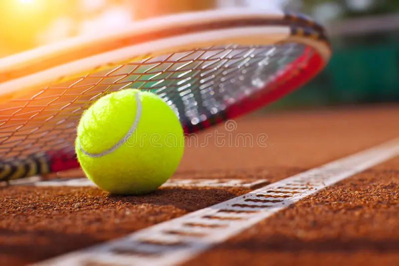
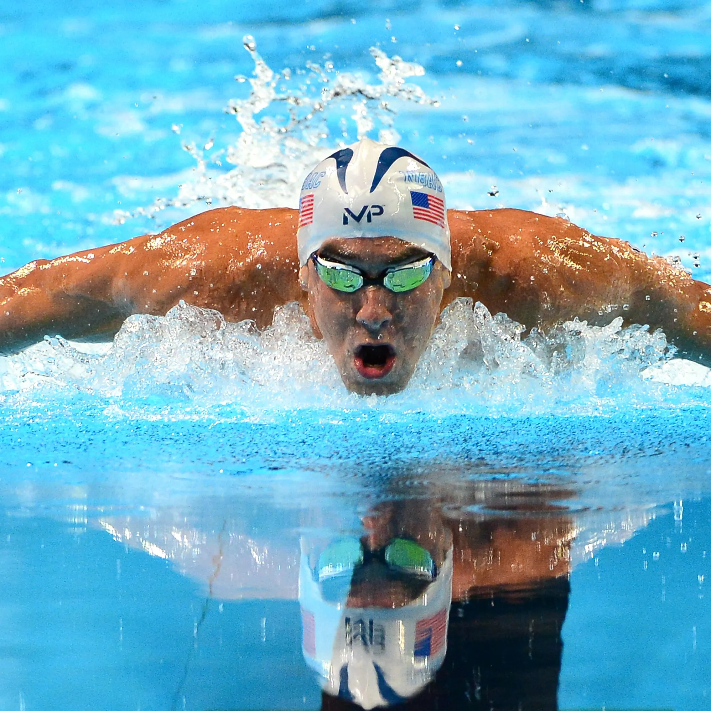
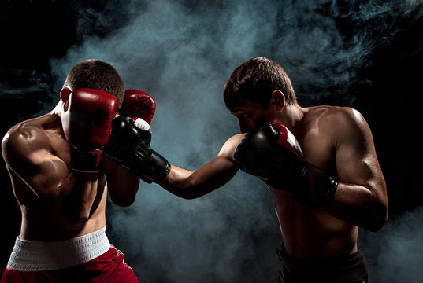

sports
football
fooball is a team sport played between two teams of eleven players each with a spherical ball. with over 250 million players in more than 200 countries football is the most popular sport in the world. football is played on a rectangular field with two goals on either side.
Tennis
tennis is a sport played by two players in singles matches or teo teams of two players in doubles matches. each player carries a racket to hit the ball over the net into the opponent's court. the number of hits is not fixed but the score determines the winner.

vollyball
It is one of the most popular international sports. Two teams play separated by a high net. each team must hit the ball over the net into the opponent's court. each team has three attempts to hit the ball over the net.
swimming
swimming is the sport of swimming in water for the purpose of competition. swimming is a widely practiced recreational activity, as well as a global and olympic sport. there are many benefits to the sport as well as risks when the swimmer is not careful.

Athletics
A sport that includes a number of events that involve running, jumping, throwing, or walking. often referred to as track and field competitions, the sport includes individual events such as the 100m dash, marathon, or long jump combined events including the decathlon and heptathlon or team-based events such as the 4*100m relay
Boxing game
It is a combat sport and martial atr. it takes place in a boxing ring, and involves two people - usually wearing protective gear, such as protective gloves, hand wraps, and mouth guards - exchanging punches for a predetermined amount of time.
